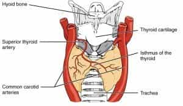
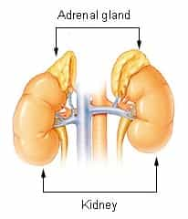

< < < Back
Are There Legitimate Reasons To Be Fat? – Return Of Kings
Anybody that has been involved in physical fitness for a substantial length of time has undoubtedly been confronted with militant fatties yelling at them (the vast majority of whom, I should point out, appear to be women). Indeed, the mere existence of your fitness is a grave affront to the lives and well-being of these particular people. To justify their own obesity, they will claim that they are “literally incapable” of getting in shape or losing weight, referring to a number of medical conditions that they have, or allege to have, that keeps them from losing weight. But is there any truth to this?
Being that I like to consider myself a nice person, I’ll give these claims a fair shake: Here are a few commonly claimed medical reasons for obesity, and the legitimacy of these claims for the average…heavier than average person.
1. Hypothyroidism

Hypothyroidism is an endocrine disease in which the thyroid gland does not produce enough thyroid hormone, which is predominantly necessary for regulation of body metabolism for various nutrients. It stems from a lack of iodine in the diet.
And here, indeed, is a possibly legitimate reason for uncontrolled weight gain—a low metabolism will lead to a lack of calories utilized, which will cause adipose cells to retain more fat. With that being said…
Hypothyroidism has other symptoms beyond weight gain in adult patients, such as: Poor ability to regulate body temperature, low energy, constipation, and depression, as well as an enlarged thyroid gland known as a goiter (for your sake and mine, I won’t include pictures).
The point I’m trying to make is, it seems unlikely to me that a case of hypothyroidism would ONLY cause weight gain without the other symptoms. And while fat women often seem emotionally unstable—seemingly giving credence to the depression symptom—there’s probably a variety of other reasons for that.
Even if a case of hypothyroidism had just the one symptom, statistics show that iodine supplementation has caused rates of hypothyroidism to decrease through the world. In the United States, less than 5% of the population aged 12 and over has hypothyroidism. So while it is possible that the vengeful fatty in your life has this disorder…it’s not likely.
2. Diabetes

Diabetes is a family of disorders characterized by high blood sugar levels, and the inability of the body to process this. There are two types of diabetes: Type 1 is characterized by the inability of the pancreas to create insulin (a hormone that promotes the absorption of glucose from the bloodstream and into the skeletal muscles), and Type 2 is characterized by the cells being incapable of absorbing the insulin that is produced.
Diabetes is indeed an ailment associated with weight, but unfortunately for those using it to justify their weight gain, type 1 diabetes is actually associated with weight loss, as well as blurry vision, fatigue, and eventual organ failure and potential death.
And type 2 diabetes is a consequence of obesity and lack of exercise, not a cause of these two things. Simply put, if you are overweight, not getting enough exercise, and eating a bad diet, you are more likely to get Type 2 diabetes. There are also certain populations and ethnicities that are more likely to get it, suggesting a genetic component, but this does not negate the individual human factor of this illlness.
3. Stress

The area surrounding the human kidney contains a gland you might have heard of: the adrenal gland. This is another endocrine gland that provides hormones for internal use in the human body. The actual adrenaline hormone is produced by the adrenal medulla, the inner portion of the gland. The adrenal cortex—the outer portion—secretes a variety of steroid hormones, including the one that is of importance to this discussion: cortisol.
Cortisol is a steroid hormone that is released in response to stress. It suppresses normal immune and metabolic function to free up bodily resources for a “fight or flight” response. While it is very useful for short bursts of fear or violence (this is where the archetypical “turning white with fear” comes from—blood rushes away from the face and into the muscles so you can run away from danger faster), long term stress and thus long-term cortisol exposure has been associated with numerous deleterious health effects such as increased susceptibility to illness, stomach ulcers, difficulty sleeping, cardiac arrhythmia, and yes, weight gain.
Stress brought on by external circumstances can indeed cause weight gain and fat retention. With that being said, I have to ask: Is your life truly that stressful? Isn’t the whole concept of fat acceptance the absolute epitome of “First World Problems,” which is to say, not actually worthy of being called stressful?
In other words, while fat acceptance people may be fat, and they may be under stress, perhaps they’re overreacting over comparatively minor problems. And there are numerous ways to actively deal with stress. Physical exercise does it for me most times, and that is an enormous hint that I am dropping for the benefit of the amply sized. If exercise isn’t your thing, try meditation or talking to somebody about your problems.
The point I’m trying to make is, stress is a factor in weight gain, but it’s not some sort of mysterious miasma that just comes upon you and forces you to gain weight. It is a negative, but manageable, facet of life.
4. Genetic predisposition
And when all else fails, these people will just claim that their genetics give them a predisposition to weight gain. And again, there is some truth to this: Some individuals are endomorphic and naturally more likely to be large, as are certain races and ethnicities.
But, much like the stress issue discussed above, this is a bump in the road that can be overcome. While I share the belief of any red-pilled person that human existence is not entirely an issue of nurture, a genetic predisposition to weight gain should not force you to give up even trying. And that’s not even getting into how ironic it is that a facet of Social Justice Warriordom, which fat acceptance undoubtedly is, is utilizing an argument based on human genetics, a field that they ruthlessly suppress when it can’t be used to argue for them. Which is to say, most times.
Also, this argument fails to stand up to statistical scrutiny: In the United States, 65% of people are overweight or obese. Is it likely that an overwhelming majority of people in a nation are “genetically predisposed” to being overweight? Either the United States’ 300 million people all can be traced back to a small “Founder’s Effect” population that had a predisposition for obesity (not likely, considering the massive amounts of immigration the US had from 1830-1880, and 1965-present), or this excuse is full of crap. I think for most people, it’s the latter.
So in conclusion, there are indeed legitimate reasons that can cause people to be overweight against their will. The ones I analyzed here are just a few of them. But the likelihood of every fat person having one of those reasons is astronomically low. If you’re overweight, it’s more likely that you don’t have these issues, and proper diet and exercise can help you more than any excuse.
Read More: NA[X]ALT Is Not A Legitimate Argument For Any Group